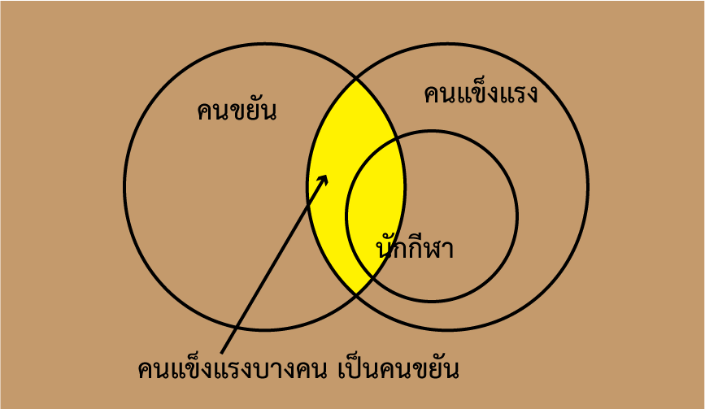
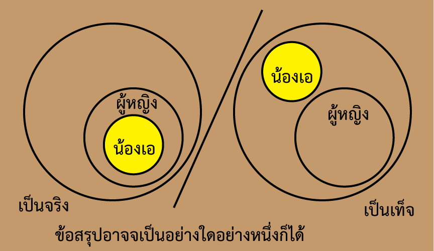

การสรุปเหตุผลที่มีในข้อสอบ ก.พ. อาจจะพบในข้อสอบ เงื่อนไขภาษา
โดยการสรุปจากข้อมูลที่กำหนดให้ ซึ่งเราจะต้องตัดสินว่า ข้อสรุปนั้น เป็นจริงหรือเป็นเท็จ เช่น
บอยอายุ 25 ปี เล็กอายุ 30 ปี และมีข้อสรุปว่า ถ้าบอย อายุ 20 ปี เล็กจะมีอายุ 30 ปี การตัดสินข้อสรุปนี้ คือ จริง เป็นต้น
สรุปแบบย่อ
- กรณีเชื่อมประโยคด้วย และ
จะเป็นจริงได้ ก็ต่อเมื่อ ประโยคทั้งสองเป็นจริง
| ประโยคแรก | และ | ประโยคที่สอง | ข้อสรุป |
| จริง | และ | จริง | จริง |
| ตัวอย่าง | ข้อเท็จจริง: สุดาอายุ 18 ปี สมทรงอายุ 20 ปี
ข้อสรุป: สุดาอายุ 18 ปี และ สมทรงอายุ 20 ปี | จริง |
| เท็จ | และ | เท็จ | เท็จ |
| ตัวอย่าง | ข้อเท็จจริง: สุดาอายุ 18 ปี สมทรงอายุ 20 ปี
ข้อสรุป: สุดาอายุ 15 ปี และ สมทรงอายุ 21 ปี | เท็จ |
| เท็จ | และ | จริง | เท็จ |
| ตัวอย่าง | ข้อเท็จจริง: สุดาอายุ 18 ปี สมทรงอายุ 20 ปี
ข้อสรุป: สุดาอายุ 15 ปี และ สมทรงอายุ 20 ปี | เท็จ |
| จริง | และ | เท็จ | เท็จ |
| ตัวอย่าง | ข้อเท็จจริง: สุดาอายุ 18 ปี สมทรงอายุ 20 ปี
ข้อสรุป: สุดาอายุ 18 ปี และ สมทรงอายุ 19 ปี | เท็จ |
- กรณีเชื่อมด้วย หรือ
จะเป็นจริงได้ ก็ต่อเมื่อ มีประโยคใดประโยคหนึ่ง เป็นจริง
| ประโยคแรก | หรือ | ประโยคที่สอง | ข้อสรุป |
| จริง | หรือ | จริง | จริง |
| ตัวอย่าง | ข้อเท็จจริง: สุดาอายุ 18 ปี สมทรงอายุ 20 ปี
ข้อสรุป: สุดาอายุ 18 ปี หรือ สมทรงอายุ 20 ปี | จริง |
| เท็จ | หรือ | เท็จ | เท็จ |
| ตัวอย่าง | ข้อเท็จจริง: สุดาอายุ 18 ปี สมทรงอายุ 20 ปี
ข้อสรุป: สุดาอายุ 15 ปี หรือ สมทรงอายุ 21 ปี | เท็จ |
| เท็จ | หรือ | จริง | เท็จ |
| ตัวอย่าง | ข้อเท็จจริง: สุดาอายุ 18 ปี สมทรงอายุ 20 ปี
ข้อสรุป: สุดาอายุ 15 ปี หรือ สมทรงอายุ 20 ปี | จริง |
| จริง | หรือ | เท็จ | เท็จ |
| ตัวอย่าง | ข้อเท็จจริง: สุดาอายุ 18 ปี สมทรงอายุ 20 ปี
ข้อสรุป: สุดาอายุ 18 ปี หรือ สมทรงอายุ 19 ปี | จริง |
-
กรณี ถ้า + ประโยคที่ 1 + แล้ว + ประโยคที่ 2
จะเป็นเท็จ ก็ต่อเมื่อ ประโยคแรกเป็นจริง และประโยคหลัง เป็นเท็จ นอกนั้น เป็นจริงหมด
| ถ้า | ประโยคแรก | แล้ว | ประโยคที่สอง | ข้อสรุป |
| ถ้า | จริง | แล้ว | จริง | จริง |
| ตัวอย่าง | เงื่อนไข/ข้อเท็จจริง: 1)นักเรียนทำการบ้าน 2)ครูให้รางวัล
ข้อสรุป: ถ้า นักเรียนทำการบ้าน แล้ว ครูให้รางวัล | จริง |
| ถ้า | จริง | แล้ว | จริง | จริง |
| ตัวอย่าง | ข้อเท็จจริง: 1)นักเรียนทำการบ้าน 2)ครูให้รางวัล
ข้อสรุป: ถ้า นักเรียนทำการบ้าน แล้ว ครูให้รางวัล | จริง |
| ถ้า | เท็จ | แล้ว | เท็จ | จริง |
| ตัวอย่าง | ข้อเท็จจริง: 1)นักเรียนทำการบ้าน 2)ครูให้รางวัล
ข้อสรุป: ถ้า นักเรียนไม่ทำการบ้าน แล้ว ครไม่ให้รางวัล | จริง |
| ถ้า | เท็จ | แล้ว | จริง | จริง |
| ตัวอย่าง | ข้อเท็จจริง: 1)นักเรียนทำการบ้าน 2)ครูให้รางวัล
ข้อสรุป: ถ้า นักเรียนไม่ทำการบ้าน แล้ว ครูให้รางวัล
การที่นักเรียนไม่ทำการบ้าน ไม่ได้อยู่ในเงื่อนไข ผลจึงเป็นจริง | จริง |
| ถ้า | จริง | แล้ว | เท็จ | เท็จ |
| ตัวอย่าง | ข้อเท็จจริง: 1)นักเรียนทำการบ้าน 2)ครูให้รางวัล
ข้อสรุป: ถ้า นักเรียนทำการบ้าน แล้ว ครูไม่ให้รางวัล
การที่ครูไม่ให้รางวัล ถือเป็นการผิดเงื่อนไข ผลจึงเป็นเท็จ | เท็จ |
การสรุปเหตุผลจะต้องมีหลักเกณฑ์ในการสรุป ซึ่งตามหลักตรรกศาสตร์มีกฏเกณฑ์การสรุปข้อเท็จจริง จำนวนมาก แต่เท่าที่พบส่วนใหญ่ในข้อสอบ มักจะใช้กฎเกณฑ์พื้น ๆ ไม่กี่อย่าง ถ้าทำความเข้าใจอย่างถ่องแท้แล้ว จะสามารถทำข้อสอบ การสรุปเหตุผลได้อย่างง่ายดาย
การสรุปแบบ นิรนัย (deductive)
การสรุปแบบ นิรนัย (deductive) เป็นการสรุปจากข้อเท็จจริง โดยโจทย์จะกำหนด เงื่อนไข เหตุการณ์ หรือสถานการณ์(premises) ซึ่งจะนำไปสู่ข้อสรุป(conclusion) มาให้ 2 หรือ 3 เหตุการณ์ หรือมากกว่านั้น และให้หาข้อสรุป เช่น
สมมติว่า ถ้า P เป็นจริงแล้ว จะทำให้ Q เป็นจริงด้วย เราสามารถเขียนได้ ดังนี้
P → Q
การสรุปเหตุผล เป็นจริง สรุปถูกต้อง หรือสอดคล้องกับข้อมูลที่ให้มา
กรณีที่ 1: Hypothetical Syllogism
| เหตุการณ์ที่ 1: | P → Q | (ถ้า P เป็นจริง จะทำให้ Q เป็นจริง) |
| เหตุการณ์ที่ 2: | Q → R | (ถ้า Qเป็นจริง จะทำให้ R เป็นจริง) |
| ข้อสรุป: | P → R | (ถ้า P เป็นจริง จะทำให้ R เป็นจริง) |
ตัวอย่าง:
เหตุการณ์ที่ 1: ถ้าฝนตกจะทำให้รถติด
เหตุการณ์ที่ 2: ถ้ารถติด จะทำให้มาสาย
ข้อสรุป: ถ้าฝนตก จะทำให้มาสาย
กรณีที่ 2: Modus Ponens
| เหตุการณ์ที่ 1: | P → Q | (ถ้า P เป็นจริง จะทำให้ Q เป็นจริง) |
| เหตุการณ์ที่ 2: | P | (P เป็นจริง) |
| ข้อสรุป: | Q | (Q เป็นจริง) |
ตัวอย่างที่ 1:
เหตุการณ์ที่ 1: ถ้านักเรียนทำการบ้าน ครูจะให้รางวัล
เหตุการณ์ที่ 2: นักเรียนทำการบ้าน
ข้อสรุป: ครูให้รางวัล
ในกรณีนี้ ถ้านักเรียนทำการบ้านแล้วครูไม่ให้รางวัล ถือว่าครูผิดเงื่อนไข
ตัวอย่างที่ 2:
เหตุการณ์ที่ 1: คนขับรถในเมืองใช้ความเร็วเกินกว่า 80 ก.ม./ช.ม.ทำผิดกฎหมาย
เหตุการณ์ที่ 2: นายมาขับรถในเมือง ใช้ความเร็ว 90 ก.ม./ช.ม.
ข้อสรุป: นายมาทำผิดกฎหมาย
กรณีที่ 3: Modus Tollens
| เหตุการณ์ที่ 1: | P → Q | (ถ้า P เป็นจริง จะทำให้ Q เป็นจริง) |
| เหตุการณ์ที่ 2: | ~Q | (Q เป็นเท็จ) |
| ข้อสรุป: | ~P | (P เป็นเท็จ) |
ตัวอย่าง
เหตุการณ์ที่ 1: ถ้านักเรียนทำการบ้าน ครูจะให้รางวัล
เหตุการณ์ที่ 2: ครูไม่ให้รางวัล
ข้อสรุป: นักเรียนไม่ได้ทำการบ้าน
การสรุปเหตุผล สรุปไม่ถูกต้อง สรุปไม่ได้ หรือไม่สอดคล้องกับข้อมูลที่ให้มา
มีข้อผิดพลาดเกิดขึ้นใน 2 กรณี คือ
กรณีที่ 1: ยืนยันส่วนหลัง (Affirming the Consequent):
| เหตุการณ์ที่ 1: | P → Q | (ถ้า P เป็นจริง จะทำให้ Q เป็นจริง) |
| เหตุการณ์ที่ 2: | Q | (Q เป็นจริง) |
| ข้อสรุป: | สรุปไม่ได้ | (สรุปไม่ได้) |
ตัวอย่างที่ 1
เหตุการณ์ที่ 1: ถ้านักเรียนทำการบ้าน ครูจะให้รางวัล
เหตุการณ์ที่ 2: ครูจะให้รางวัล
ข้อสรุป: นักเรียนทำการบ้าน
สรุปไม่ได้ เพราะไม่มีเงื่อนไขเรื่องนี้
ในกรณีนี้ ไม่อยู่ในเงื่อนไขว่า การที่ครูจะให้รางวัลแก่นักเรียน จะมีกรณีใดบ้าง เช่น ถ้านักเรียนเป็นคนตรงต่อเวลา ครูก็อาจจะให้รางวัลได้ เช่นกัน ซึ่งไม่อยู่ในเงื่อนไข หรือ premise ที่กำหนดให้ ดังนั้นการสรุปเช่นนี้ จึงสรุปไม่ได้ ไม่สอดคล้องกับเงื่อนไขที่กำหนด
ยกเว้น
ในกรณีที่ส่วนหน้าและส่วนหลังเป็นจริงหรือเป็นเท็จเหมือนกัน ซึ่งเราสามารถสลับที่กันได้ ลักษณะนี้ เรียกว่า biconditional การยอมรับส่วนหลัง จะทำให้ยอมรับส่วนหน้าด้วย เช่น
ถ้าเขาไม่อยู่นอกห้อง เขาอยู่ในห้อง เขาอยู่ในห้อง สรุปว่า เขาไม่อยู่นอกห้อง
กรณีที่ 2: ปฎิเสธส่วนหน้า (Denying the Antecedent)
| เหตุการณ์ที่ 1: | P → Q | (ถ้า P เป็นจริง จะทำให้ Q เป็นจริง) |
| เหตุการณ์ที่ 2: | ~P | (P เป็นเท็จ) |
| ข้อสรุป: | สรุปไม่ได้ | (สรุปไม่ได้) |
ตัวอย่างที่ 1
เหตุการณ์ที่ 1: ถ้านักเรียนทำการบ้าน ครูจะให้รางวัล
เหตุการณ์ที่ 2: นักเรียนไม่ทำการบ้าน
ข้อสรุป: ครูไม่ให้รางวัล
สรุปไม่ได้ เพราะไม่มีเงื่อนไขเรื่องนี้
ในกรณีนี้ ครูจะให้รางวัลก็ต่อเมื่อนักเรียนทำการบ้าน แต่ทั้งนี้ ไม่ได้หมายความรวมถึงการที่นักเรียนไม่ทำการบ้าน แล้วจะเกิดอะไรขึ้น ซึ่งอาจจะมีหลายอย่างได้ เช่น ครูจะลงโทษ หรือ นักเรียนจะถูกพ่อแม่ดุ หรืออะไรก็ได้ ไม่เกี่ยวกับเงื่อนไขที่กำหนด จึงสรุปไม่ได้
ตัวอย่างที่ 2
เหตุการณ์ที่ 1: ถ้าคุณเป็นข้าราชการ คุณมีงานทำ
เหตุการณ์ที่ 2: คุณไม่เป็นข้าราชการ
ข้อสรุป: คุณไม่มีงานทำ
สรุปไม่ได้เพราะเหตุผลที่ยกมา หรือ premise ที่กำหนด ไม่เป็นความจริงเสมอไป เนื่องจาก การมีงานทำ ไม่จำเป็นต้องเป็นข้าราชการเท่านั้น เป็นพ่อค้า เป็นช่างไม้ ประกอบธุรกิจส่วนตัว หรืออื่น ๆ ก็มีงานทำได้ทั้งนั้น
เทคนิคการวิเคราะห์ความสมเหตุสมผล
- วิเคราะห์ข้อความที่กำหนดให้ว่า อะไรเป็นเหตุ อะไรเป็นผล เช่น
เขาถูกลงโทษเพราะเขาทำผิด
เหตุ(P): เขาทำผิด
ผล(Q): เขาถูกลงโทษ
รถติดมากจึงทำให้มาทำงานสาย
เหตุ(P): รถติดมาก
ผล(Q): มาทำงานสาย
- วิเคราะห์ผลสรุป โดยใช้สูตร ข้างต้น เช่น
เหตุการณ์ที่ 1: รถติดมากจึงทำให้มาทำงานสาย
เหตุการณ์ที่ 2: วันนี้มาทำงานไม่สาย
ข้อสรุป: วันนี้รถไม่ติด
วิเคราะห์ตาม กรณีที่ 3: Modus Tollens เป็นการสรุปที่สมเหตุสมผล
การนำแผนภาพมาตรวจสอบข้อเท็จจริง
การพิสูจน์ข้อเท็จจริงอีกวิธีหนึ่ง คือการใช้แผนภาพออยเลอร์ หรือ Euler diagram มาตรวจสอบ ซึ่ง ข้อมูลที่กำหนดให้มักจะมีการแบ่งเป็นหมวดหมู่ และมีคำระบุปริมาณ เช่น ทั้งหมด หรือบางส่วน รวมอยู่ด้วย
Euler diagram จัดออกเป็น 4 ลักษณะ ดังภาพ
ในการพิสูจน์ความสมเหตุสมผล ถ้าพบว่ามีแผนภาพ เพียงภาพใดภาพหนึ่งที่ไม่ตรงกับข้อสรุป จะถือว่าข้อสรุปนั้น ไม่สมเหตุสมผล
ตัวอย่างที่ 1:
เหตุการณ์ที่ 1: นักกีฬาทุกคนเป็นคนแข็งแรง
เหตุการณ์ที่ 2: นักกีฬาบางคนเป็นคนขยัน
ข้อสรุป: คนแข็งแรงบางคนเป็นคนขยัน
เป็นข้อสรุปที่สมเหตุผล ดังภาพ

ตัวอย่างที่ 2:
เหตุการณ์ที่ 1: ผู้หญิงทุกคนนุ่งกางเกง
เหตุการณ์ที่ 2: น้องเอนุ่งกางเกง
ข้อสรุป: น้องเอเป็นผู้หญิง
เป็นข้อสรุปที่ไม่สมเหตุผล เพราะน้องเออาจจะไม่เป็นผู้หญิง หรือเป็นผู้หญิงก็ได้ ดังภาพ
